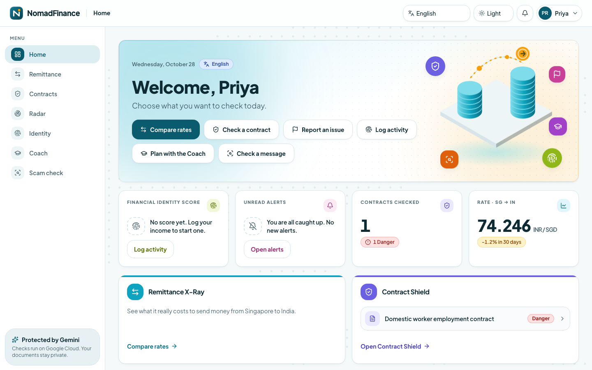
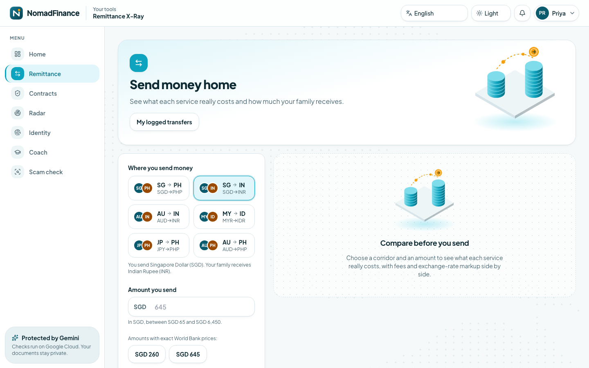
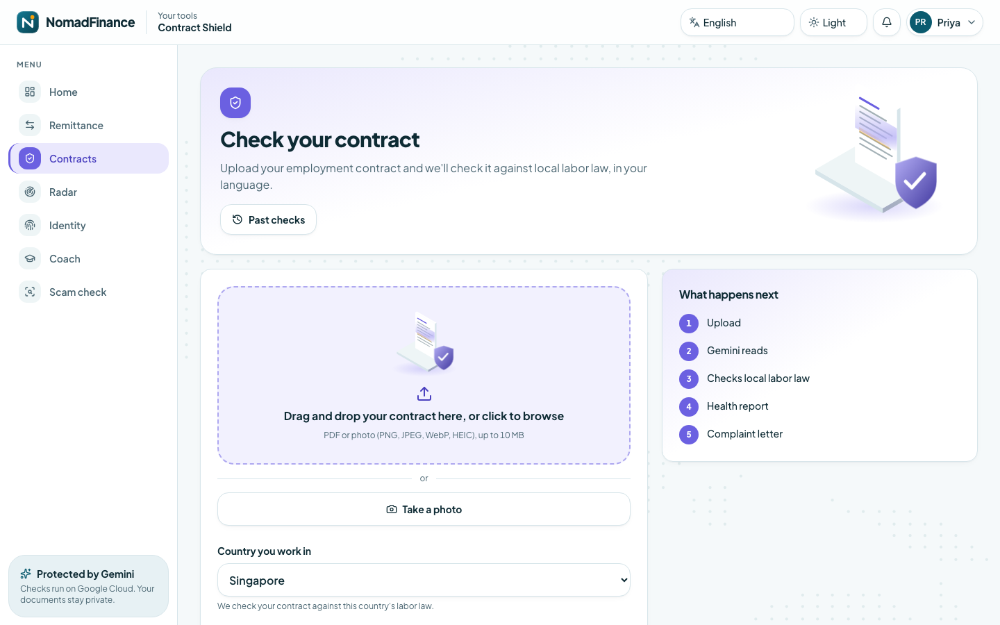
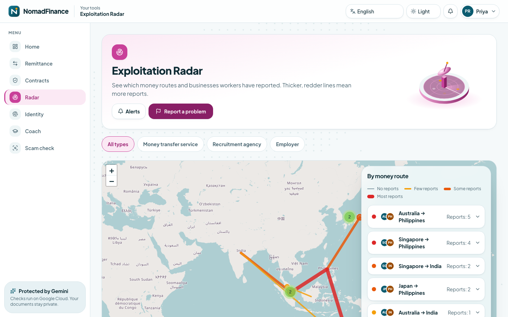
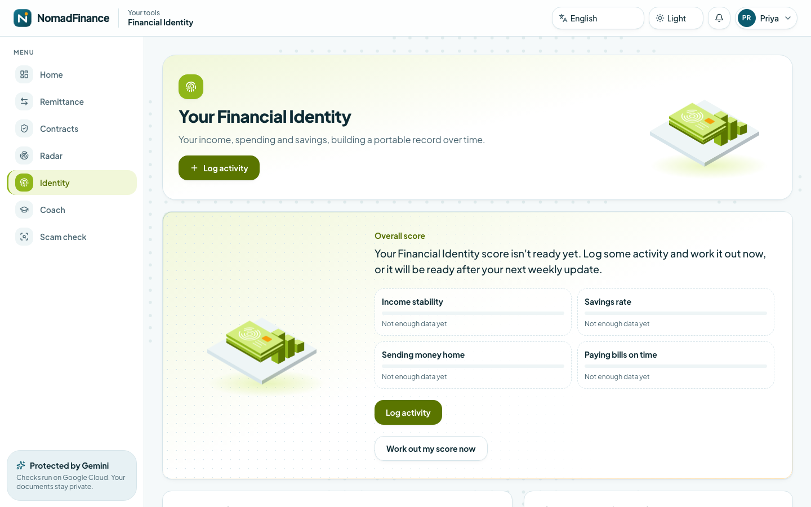
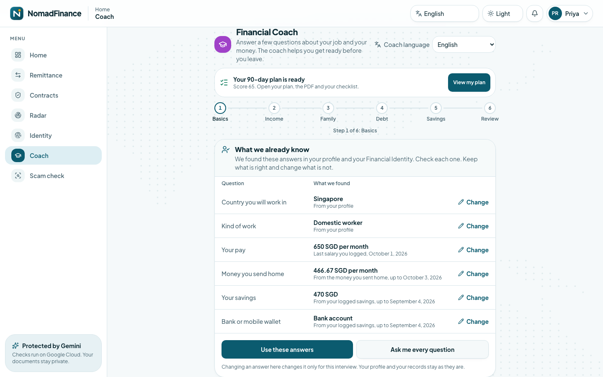
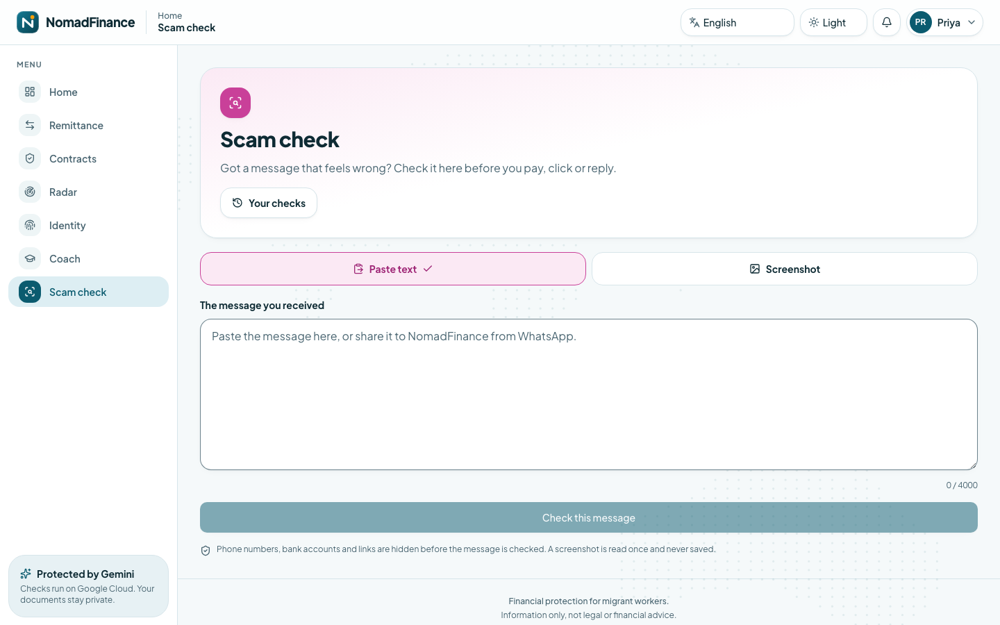

NomadFinance: AI Financial Safety Net for Migrant Workers
Your pay. Your contract. Your money home. Protected. An AI-powered financial safety net for the world's 280 million migrant workers, built to work in their own language on the phone already in their pocket. Built for the Google Cloud AI Builder Cup 2026, BFSI track (JAPAC), as a team project with Devam and Aditya.

Demo
Watch the Demo
The problem
Why NomadFinance Exists
About 280 million people live and work outside the country they were born in. Together they send roughly $650 billion home every year, and about $41 billion of that disappears into fees. Fees are only the visible loss. A worker who has just arrived somewhere new usually meets every one of these problems alone:
Contracts they cannot read
The contract is in a language they do not understand, so they sign terms that are illegal where they work. Contract Shield reads it, checks every clause against local labor law and explains it in their language.
Hidden transfer costs
Money transfers hide their real cost in exchange-rate markups and layered fees. Remittance X-Ray shows what each provider really charges and what the family actually receives.
Bad agencies, wage theft, illegal deductions
Nobody warns the next worker. Exploitation Radar lets workers report anonymously and warns everyone on the same route.
No financial record
Years of honest work leave no record anywhere. Financial Identity builds a portable report a bank at home can read.
Scam messages
Fake jobs, prizes, loans and messages pretending to be the worker's own bank. Scam Check explains the trick and what to do next.
Leaving with no plan
No savings target and no idea what is fair. Financial Coach scores their preparedness and writes a 90-day plan.
The project lines up with UN Sustainable Development Goals 8 (decent work), 10 (reduced inequalities, especially target 10.c on remittance costs) and 16 (justice and strong institutions).
The six pillars
One Worker, Six Moments
The demo data is built around Priya, a made-up domestic worker who leaves India for Singapore. Before she leaves, the Coach asks a few simple questions and gives her a 13-week plan. When the agency hands her a contract, Contract Shield finds the clause that lets the employer keep her passport. On payday, Remittance X-Ray shows which service leaves her family the most. When a message asks for her one-time code, Scam Check calls it out and she warns other workers anonymously. Every report feeds Exploitation Radar for the next worker, and when she goes home, Financial Identity turns her history into a PDF a bank can trust. Four pillars shipped in v1.0; Scam Check and Financial Coach joined in v2.0 behind feature flags.

Pillar 1
Remittance X-Ray
What does sending money home really cost?
- Ranks every provider by the number that matters: how much your family receives, using the fee plus the hidden exchange-rate markup.
- Rate trends, the best day to send, and what a worker would have saved against the provider they used.
- A short recommendation in the worker's language; a provider flagged by Exploitation Radar is marked and passed over.
- A transfer log that feeds Financial Identity.

Pillar 2
Contract Shield
Is this contract fair where I work?
- A step-by-step Gemini pipeline reads the text, detects the language, country and type of job, then compares each clause with the host country's labor law.
- A Safe / Caution / Danger rating with risky clauses shown beside a plain-language translation in six languages.
- A ready-to-send complaint letter addressed to the right authority for that country.
- Clearly illegal clauses are reported to Radar automatically and anonymously; the stated salary becomes a verified income entry in Financial Identity.

Pillar 3
Exploitation Radar
Who else has been hurt by this agency?
- A shared, anonymous memory for workers: report an agency, employer or money-transfer operator.
- Gemini checks each report for spam and duplicates and sorts it into a type of abuse; reports about the same business are matched by meaning with vector search.
- Each business gets a risk profile and community rating. A scheduled job spots sudden surges every six hours and alerts workers following that route.
- Reporters are stored only as a keyed hash, never as an account id.

Pillar 4
Financial Identity Builder
Proof of a working life.
- Workers log income, bills (snap a photo and Gemini reads it), savings and transfers.
- Every week the history becomes a score and a plain-language story, with a timeline of progress and one activity feed.
- A PDF report for banks and micro-lenders at home; the download link works for 24 hours.
- Opt-in only: Coach plan check-ins and scam-check activity can appear as numbers and dates, never message text, and turning it off removes them from the next report straight away.

Pillar 5 · v2.0, flag coach
Financial Coach
Am I ready to leave?
- A friendly interview, one question at a time in short plain sentences, by tap, amount, typing or voice.
- Remembers what the app already knows and asks the worker to confirm instead of repeating questions.
- A preparedness score from 0 to 100 over five factors, and a 13-week plan with a monthly budget, the cheapest way to send money home, and a debt and emergency-fund plan. The PDF comes in six languages.
- Check-ins at day 30, 60 and 90 by push notification. Works with a weak signal: answers typed offline are sent once when the signal returns.
- Stays in its lane: it will not recommend a loan, an investment or an app, and it responds with care to a worker in distress.

Pillar 6 · v2.0, flag scam
Scam Check
Is this message a trick?
- A verdict and risk meter with the giveaway words highlighted, which of 8 scam types and 6 pressure tactics it uses, and how many similar scams are already known.
- Links, phone numbers, e-mail addresses and chat handles found in the message, with warnings such as "link shortener". They are listed but never opened or contacted.
- Three plain next steps that the phone can read aloud, and a one-tap anonymous warning to other workers after a confirmation sheet showing exactly what would be shared.
- The same message checked twice is answered instantly from the saved check with no AI call; each worker gets 20 new checks an hour.
System design
Architecture
A React PWA on Firebase Hosting talks to a Python FastAPI service on Cloud Run. The API keeps its data in Firestore, asks Gemini to read, sort, translate and explain, and lets Cloud Scheduler run the background jobs. Every route checks the caller's Firebase sign-in first. Dashed outlines mark modules that ship behind a feature flag. The diagram below is the team's own system architecture, use the zoom buttons or drag to pan.
System architecture
%% NomadFinance system architecture, v2.0.0 (read against the code and the live project on 2026-10-11).
%% Dashed outlines = shipped, but behind a feature flag (config/feature_flags): off means the route answers 404.
%% Model tiers are shown by role; the model behind each tier is an environment variable (ADR-002).
flowchart LR
User(["Migrant worker<br/>any language, any phone"])
subgraph FE["FRONTEND - Firebase Hosting - React 18 PWA"]
Web["Sign-in with Firebase Auth, dashboard, installable,<br/>offline cache, 6 languages, light and dark.<br/>FlagGate asks GET /api/v2/flags"]
PgCore["Remittance X-Ray, Contract Shield,<br/>Exploitation Radar, Financial Identity"]
PgNew["Financial Coach, Scam Check"]
end
User --> Web
Web --> PgCore
Web -. "flag coach, flag scam" .-> PgNew
subgraph BE["BACKEND - Cloud Run nomadfinance-api - FastAPI - 0 to 2 instances"]
MW["Middleware: request log, security headers, CORS,<br/>rate limit, body-size cap, token check"]
V1["API v1 - /api/v1<br/>remittance, contracts, radar, fib, users"]
V2["API v2 - /api/v2<br/>coach, scam, flags"]
FLG["require_flag<br/>60 s cache, off = 404"]
INT["Internal routes - /api/v1/internal<br/>only the scheduler's signed token"]
GC["Gemini client: tiers, retries, token log,<br/>daily budget per feature.<br/>PII redaction for Coach and Scam text"]
end
PgCore --> MW
PgNew --> MW
MW --> V1
MW --> V2
V2 --> FLG
subgraph SV["SERVICES"]
RX["Remittance engine"]
CS["Contract pipeline"]
RD["Radar:<br/>intake, clustering, alerts"]
FI["Financial Identity:<br/>profile, story, PDF"]
CO["Coach:<br/>interview, score, plan"]
SA["Scam analysis"]
end
V1 --> RX
V1 --> CS
V1 --> RD
V1 --> FI
FLG --> CO
FLG --> SA
subgraph AI["GEMINI - one model per tier"]
G1["Reasoning<br/>contract comparison, complaint letters,<br/>Identity story, Coach plan, scam explainer"]
G2["Extraction<br/>photos and PDFs: contracts, bills,<br/>screenshots, radar reports"]
G3["Classification<br/>scam verdict, radar checks, categories,<br/>translation, recommendations, Coach replies"]
G4["Embedding<br/>768-number vectors"]
end
SV --> GC
GC --> G1
GC --> G2
GC --> G3
GC --> G4
subgraph DB["FIRESTORE - (default) - Native - asia-south1"]
D1[("Worker records - users/uid<br/>contracts, transfers, income, bills, savings,<br/>financial_profile, notifications,<br/>coach_sessions, coach_plans, scam_checks")]
D4[("Reference data<br/>corridors, rates_cache, rates_history, labor_laws,<br/>complaint_templates, cost_baselines")]
D5[("Radar<br/>radar_reports, report_embeddings,<br/>radar_entities, radar_alerts")]
D6[("Scam knowledge<br/>scam_taxonomy, scam_patterns - vector,<br/>scam_indicators, scam_stats")]
D7[("Operations<br/>config/feature_flags, gemini_usage")]
end
RX --> D4
RX --> D1
CS --> D1
CS --> D4
RD --> D5
FI --> D1
CO --> D1
CO --> D4
SA --> D1
SA --> D6
SA -. "similar reports, one-tap report" .-> D5
FLG --> D7
GC --> D7
Web -. "own data only, security rules" .-> DB
ST[("Cloud Storage<br/>bill photos, radar evidence,<br/>Identity and Coach PDFs")]
FI --> ST
CO --> ST
RD --> ST
SM["Secret Manager<br/>gemini-api-key, radar-reporter-hash-secret,<br/>currencyfreaks-api-key"] -. "mounted as env vars" .-> BE
SCH["CLOUD SCHEDULER - 5 jobs<br/>refresh-rates, every 2 hours<br/>radar-aggregation, every 6 hours<br/>scam-stats, daily 01:30 UTC<br/>coach-checkins, daily 02:00 UTC<br/>fib-recompute, Sundays 02:00 UTC"]
SCH --> INT
INT --> RX
INT --> RD
INT --> SA
INT --> CO
INT --> FI
FCM["Firebase Cloud Messaging<br/>radar alerts, Coach check-ins"]
RD --> FCM
CO --> FCM
FCM --> User
FXP["Live FX rates - failover<br/>Frankfurter, ExchangeRate-API,<br/>CurrencyFreaks, Wise"]
RX -. "cron refresh" .-> FXP
DS["data-scripts loaders - run by hand<br/>World Bank prices, ILO labor laws,<br/>cost baselines, scam templates, demo data"]
DS --> D4
DS --> D6
DS -. "demo and map data" .-> D5
LOG["Cloud Logging, log-based metrics,<br/>dashboard, daily-limit alerts"]
CI["GitHub Actions - keyless sign-in to Google<br/>deploys backend, frontend,<br/>rules and scheduler jobs"]
BE -. "structured logs" .-> LOG
CI -.-> BE
CI -.-> FE
CI -. "firestore.rules, storage.rules" .-> DB
CI -.-> SCH
classDef userStyle fill:#4285F4,stroke:#1a73e8,color:#fff
classDef aiStyle fill:#EA4335,stroke:#c5221f,color:#fff
classDef dbStyle fill:#34A853,stroke:#188038,color:#fff
classDef extStyle fill:#FBBC04,stroke:#f9ab00,color:#000
classDef flagged stroke-dasharray:5 3,stroke-width:2px
class User userStyle
class G1,G2,G3,G4 aiStyle
class D1,D4,D5,D6,D7,ST dbStyle
class FXP,DS extStyle
class PgNew,FLG,CO,SA,D6 flagged
Pillars working together
Cross-Pillar Data Flow
The pillars feed each other. A flow into Exploitation Radar is always anonymous: no account id and no raw message. Solid lines are v1.0 flows that are always on; dotted lines involve a flag-gated v2.0 module.
Cross-pillar data flow
%% Cross-pillar data flow, v2.0.0 (edges read against backend/app/services and the frontend).
%% Solid line = a v1.0 flow, always on. Dotted line = a flow that involves a flag-gated v2.0 module.
%% Dashed outline = the module sits behind its feature flag.
%% A flow into Exploitation Radar is anonymous: no account id, no raw message.
flowchart TB
U(["Migrant worker"])
U --> P1["Remittance X-Ray"]
U --> P2["Contract Shield"]
U --> P3["Exploitation Radar"]
U --> P4["Financial Identity"]
U -. "flag coach" .-> P5["Financial Coach"]
U -. "flag scam" .-> P6["Scam Check"]
P1 -- "every logged transfer" --> P4
P2 -- "danger clauses, anonymous" --> P3
P2 -- "stated salary becomes verified income" --> P4
P3 -- "flagged transfer operators" --> P1
P3 -- "flagged employers and agencies" --> P2
P1 -. "cheapest provider and quote" .-> P5
P5 -. "deep link with route and amount" .-> P1
P3 -. "flagged operators passed over in the plan" .-> P5
P2 -. "salary and employer - worker confirms" .-> P5
P2 -. "legal recruitment-fee cap" .-> P5
P4 -. "pay, savings, transfers - worker confirms" .-> P5
P5 -. "plan targets become goals" .-> P4
P5 -. "plan check-ins - opt-in" .-> P4
P6 -. "one-tap report - anonymous, worker confirms" .-> P3
P3 -. "seen N times on your route - counts only" .-> P6
P6 -. "scam-check activity - opt-in" .-> P4
P4 --> OUT(["Portable Financial Identity<br/>PDF and activity feed"])
OUT --> MFI["Bank or micro-lender<br/>in the home country"]
classDef pillar fill:#4285F4,stroke:#1a73e8,color:#fff
classDef output fill:#34A853,stroke:#188038,color:#fff
classDef flagged stroke-dasharray:5 3,stroke-width:2px
class P1,P2,P3,P4,P5,P6 pillar
class P5,P6 flagged
class OUT output
Under each pillar
Pipelines
One pipeline diagram per pillar, taken from the project's documentation.
Remittance X-Ray
flowchart LR
U([Worker])
U -->|1 - Select Corridor + Amount| API[Cloud Run API]
API -->|Step 1| S1[Verify Auth - Firebase]
S1 -->|Step 2| S2[Fetch Provider Fees - Firestore corridors]
S2 -->|Step 3| S3[Fetch Live FX Rate - Firestore rates_cache]
S3 -->|Step 4| S4[Fetch Historical Rates - rates_history]
S4 -->|Step 5| S5[Calculate True Total Cost per Provider]
S5 -->|Step 6| S6[Rank by Recipient Receives Most]
S6 -->|Step 7| S7[Detect Rate Trends - Best Day to Send]
S7 -->|Step 8| S8[Compute Historical Savings vs Choice]
S8 -->|Step 9| S9[Write Recommendation in the User's Language - Classification tier]
S9 --> R[Comparison Table + Trend Chart + Savings Insight]
R --> U
U -.Log Transfer.-> H[(Firestore - users transfers)]
H -.Feeds.-> FI[Financial Identity Builder]
%% Behind the flag coach: the Coach reads the cheapest provider and deep-links back in.
S6 -.Cheapest provider.-> CO[Financial Coach]
CO -.Deep link with corridor + amount.-> U
subgraph CRON[Background Cron - Every 2 Hours]
CS[Cloud Scheduler]
CS -->|Trigger| RF[refresh-rates endpoint]
RF -->|Fetch| FR[Frankfurter API]
FR -->|On failure| ER[ExchangeRate-API]
ER -->|On failure| CF[CurrencyFreaks, then Wise if configured]
FR -->|Write current| RC[(rates_cache)]
FR -->|Append point| RH[(rates_history)]
ER -->|Write current| RC
CF -->|Write current| RC
end
classDef gemini fill:#EA4335,stroke:#c5221f,color:#fff
classDef data fill:#34A853,stroke:#188038,color:#fff
classDef ext fill:#FBBC04,stroke:#f9ab00,color:#000
class S9 gemini
class S2,S3,S4,H,RC,RH data
class FR,ER,CF ext
Contract Shield
flowchart LR
U([Worker])
U -->|1 - Upload contract PDF or photo| API[Cloud Run API]
API -->|Step 1| S1[Verify Auth - Firebase]
S1 -->|Step 2| S2[Read the File Clause by Clause - Extraction tier, vision]
S2 -.Text blocks only, the file is not kept.-> X[(Firestore - contracts extraction)]
S2 -->|Step 3| S3[Detect Language + Country + Type - Extraction tier]
S3 -->|Step 4| S4[Fetch Labor Laws - Firestore]
S4 -->|Step 5| S5[Clause-by-Clause Comparison - Reasoning tier]
S5 -->|Step 6| S6[Flag Concerning Clauses]
S6 -->|Step 7| S7[Compute Contract Health Score]
S7 -->|Step 8, if a term is dangerous| S8[Write Complaint Letter - Reasoning tier]
S7 -->|Step 9| S9[Translate Report to the Worker's Language - Classification tier]
S8 -->|Step 9| S9
S9 --> R[Side-by-Side Report + Complaint Letter]
R --> U
S7 -.Save Analysis.-> L[(Firestore - users contracts)]
S6 -.Anonymized Signal.-> RD[Feeds Exploitation Radar]
%% Behind the flag coach: the Coach prefills salary and employer, and reads the legal fee cap.
L -.Latest salary + employer, user confirms.-> CO[Financial Coach]
S4 -.Legal fee cap.-> CO
classDef gemini fill:#EA4335,stroke:#c5221f,color:#fff
classDef data fill:#34A853,stroke:#188038,color:#fff
class S2,S3,S5,S8,S9 gemini
class S4,L,X data
Exploitation Radar
flowchart LR
U([Worker])
U -->|1 - Submit Report - operator agency or employer| API[Cloud Run API]
API -->|Step 1| S1[Verify Auth - App Check when enabled]
S1 -->|Step 2| S2[Extract Entity Name + Corridor + Type - Extraction tier]
S2 -->|Step 3| S3[Validate Report - spam duplicate - Classification tier]
S3 -->|Step 4| S4[Categorize Violation Type - Classification tier]
S4 -->|Step 5| S5[Generate Embedding - Embedding model]
S5 -->|Step 6| S6[Similarity Search - Firestore Vector]
S6 -->|Step 7| S7[Save Report - radar_reports]
S7 -->|Step 8| S8[Update Entity Risk Profile - radar_entities]
S8 -->|Step 9| S9[Recompute Community Rating]
S9 --> R[Report Confirmation]
R --> U
subgraph AGG[Radar Aggregation - Every 6 Hours Cron]
CS[Cloud Scheduler]
CS --> AG[aggregate-radar endpoint]
AG -->|Detect surges| AL[Generate Alerts]
AL -->|Write| RA[(radar_alerts by corridor)]
AL -->|Push| FCM[Firebase Cloud Messaging]
FCM -->|Notify| SUB[Subscribed Workers]
end
subgraph MAP[Heat Map View]
U -->|View Corridor| HM[Fetch Aggregated Data]
HM --> LEAF[react-leaflet + OpenStreetMap]
LEAF --> U
end
S7 -.Data.-> HM
%% Behind the flag scam: a scam check becomes a report that skips steps 2 to 4, because
%% the verdict is already structured and there is no free text to validate.
SCAM[Scam Analyzer] -.Anonymised scam report.-> S5
S6 -.Seen N times in your corridor.-> SCAM
classDef gemini fill:#EA4335,stroke:#c5221f,color:#fff
classDef data fill:#34A853,stroke:#188038,color:#fff
classDef ext fill:#FBBC04,stroke:#f9ab00,color:#000
class S2,S3,S4,S5 gemini
class S7,S8,RA,HM data
class LEAF ext
Financial Identity
flowchart LR
U([Worker])
U -->|Log Activity| IN{Input Type}
IN -->|Income Entry| E1[Add Income Record]
IN -->|Transfer Log| E2[Add Remittance - auto from Pillar 1]
IN -->|Bill Payment| E3[Upload Bill Photo]
IN -->|Savings| E4[Log Savings]
E1 --> API[Cloud Run API]
E2 --> API
E3 --> API
E4 --> API
API -->|Step 1| S1[Verify Auth - Firebase]
S1 -->|Bill Path - Step 2a| S2a[Extract Bill Data - Extraction tier, vision]
S2a --> S3[Save to Firestore]
S1 -->|Other Paths - Step 2b| S2b[Validate Input - Pydantic]
S2b --> S3
S3 -->|Step 3| S4[Categorize Transaction - Classification tier]
S4 -->|Step 4| S5[Update Financial Timeline - Firestore]
S5 --> R[Activity Logged]
R --> U
subgraph SCORE[Financial Score Recompute - Weekly Cron]
CS[Cloud Scheduler] --> RC[recompute-fib-profiles endpoint]
RC --> ALL[Fetch All User Activity]
ALL --> METRICS[Compute Metrics]
METRICS --> SYN[Synthesize Financial Narrative - Reasoning tier]
SYN --> PROF[(financial_profile)]
end
%% Behind the flags coach and scam: plan targets become goals, and opt-in activity signals
%% feed the narrative and the unified activity feed.
COACH[Financial Coach] -.Plan targets as goals.-> PROF
COACH -.Plan adherence, opt-in.-> METRICS
SCAMA[Scam Analyzer] -.Scam-check activity, opt-in.-> METRICS
U -->|Request Portable Report| EXP[Export Financial Identity]
EXP --> PROF
PROF --> PDF[Generate PDF - weasyprint]
PDF --> DL[Download or Share Link]
DL --> U
classDef gemini fill:#EA4335,stroke:#c5221f,color:#fff
classDef data fill:#34A853,stroke:#188038,color:#fff
class S2a,S4,SYN gemini
class S3,S5,PROF,METRICS data
Financial Coach
%% Behind the feature flag "coach".
flowchart LR
U([Worker - Before Departure])
U -->|1 - Start or resume interview| API[Cloud Run API - api v2 coach]
API -->|Step 1| S1[Verify Auth + require_flag coach]
S1 -->|Step 2| S2[Load or Create Session - one active per user]
S2 -->|Step 3| S3[Redact PII + Guardrails - fixed rules, then a Classification tier scope check]
S3 -->|Step 4| S4[Extract Slot Updates + Confidence - Classification tier]
S4 -->|Step 5| S5[Apply Slots + Advance Stage - state machine]
S5 -->|Step 6| S6[Stream Coach Reply over SSE - Classification tier by default]
S6 -->|token events| U
S2 <-.Load and save slots + transcript.-> CS[(Firestore - users coach_sessions)]
S5 -.Save slots + stage.-> CS
CTR[(Firestore - users contracts)] -.Salary + employer, user confirms.-> S2
PRF[(Firestore - users profile)] -.Country + kind of work, offered at start.-> S2
FIB[(Firestore - users income, savings, transfers)] -.Pay, savings, account, money sent home, offered at start.-> S2
S2 -->|New session carries known - worker keeps or changes each row| K1[POST sessions known - kept rows become confirmed answers, no Gemini call]
K1 -.Save kept slots.-> CS
S5 -->|Stage reaches review| S7[Compute Preparedness Score - pure Python, no model]
LL[(Firestore - labor_laws)] -.Legal fee cap.-> S7
FX[(Firestore - rates_cache)] -.Live FX.-> S7
S7 -->|Step 7| S8[Generate 90-Day Plan - Reasoning tier, structured]
BL[(Firestore - cost_baselines)] -.Cost of living.-> S8
RX[Remittance Engine - cheapest provider] -.Corridor price.-> S8
S8 -->|Step 8| S9[Validate Every Figure - derivable from inputs]
S9 -->|Step 9| S10[Translate Narrative - Classification tier, numbers untouched]
S10 -->|Step 10| S11[Render PDF - weasyprint]
S11 --> R[Score + Plan + PDF link]
R --> U
S11 -.Save plan.-> PL[(Firestore - users coach_plans)]
S11 -.Upload PDF.-> ST[(Cloud Storage - plan PDFs)]
S11 -.Plan targets as goals.-> FP[(Firestore - financial_profile)]
subgraph CHK[Check-In Reminders - Daily Cron]
CRON[Cloud Scheduler] --> CJ[send-coach-checkins endpoint - IAM]
CJ -->|Plans at day 30 60 90| DUE[Find Due Plans - once per milestone]
DUE -->|Push| FCM[Firebase Cloud Messaging]
DUE -->|Write| NT[(users notifications)]
FCM --> U
U -->|Opens the link - 3 fixed-choice answers| CK[Answer Check-In - PUT plans checkins milestone]
CK -.First answers kept, written by field path.-> PL
end
classDef gemini fill:#EA4335,stroke:#c5221f,color:#fff
classDef data fill:#34A853,stroke:#188038,color:#fff
class S3,S4,S6,S8,S10 gemini
class CS,CTR,LL,FX,BL,PL,ST,FP,NT data
Scam Check
%% Behind the feature flag "scam".
flowchart LR
U([Worker])
U -->|1 - Paste text or upload screenshot| API[Cloud Run API - api v2 scam]
API -->|Step 1| S1[Verify Auth + require_flag scam + Rate Limit 20 per hour]
S1 -->|Text path| S3
S1 -->|Image path - Step 2| S2[Resize + Read Message and Sender - Extraction tier, vision]
S2 -->|Image discarded| S3[Redact PII + Normalise + SHA-256 of text and language]
S3 -->|Step 3| S4{Verdict Cached?}
S4 -->|Hit - zero Gemini calls| R
S4 -->|Miss - Step 4| S5[Extract Indicators - URLs phones lookalike domains, never fetched]
S5 -->|Step 5| S6[Classify Message - Classification tier, structured ScamVerdict]
TAX[(Firestore - scam_taxonomy)] -.Grounding.-> S6
S5 -->|Step 6, parallel| S7[Embed Message - Embedding model, 768-number vector]
S7 --> S8[Vector Search - scam_patterns + report_embeddings]
PAT[(Firestore - scam_patterns)] -.Known templates.-> S8
RE[(Firestore - report_embeddings)] -.Radar reports.-> S8
S6 -->|is_scam true - Step 7| S9[Explain Tactics + Safe Next Steps - Reasoning tier]
S6 -->|is_scam false| S10[Short Reassurance + General Tip - Classification tier]
S9 --> R[Verdict Card + Explainer + Similar Scams]
S10 --> R
S8 --> R
R --> U
R -.Save redacted check.-> SC[(Firestore - users scam_checks)]
U -->|Warn other workers| RP[POST report - idempotent per check]
SC --> RP
RP -->|Anonymised, no raw text| RR[(Firestore - radar_reports)]
RR -.Enters Radar pipeline.-> RAD[Exploitation Radar clustering + alerts]
subgraph STATS[Weekly Counts - Daily Cron]
CRN[Cloud Scheduler scam-stats] --> AGS[aggregate-scam-stats endpoint]
AGS -->|Counts only, no text| SST[(Firestore - scam_stats)]
end
SC -.Checks of the last two weeks.-> AGS
classDef gemini fill:#EA4335,stroke:#c5221f,color:#fff
classDef data fill:#34A853,stroke:#188038,color:#fff
class S2,S6,S7,S9,S10 gemini
class TAX,PAT,RE,SC,RR,SST data
Trust & safety
Built to Be Trusted
People act on what this app tells them, so the design leans hard on safety.
The AI never invents a number
The Coach score is plain Python with no model in it. Every figure in a plan is derived from the worker's answers or stored data and checked by code, and a plan that fails the check is refused. Translated plans and the Identity report's activity paragraph get the same number check.
Facts come from curated data
Labor-law rules, scam types and tactics, 480 scam templates and cost-of-living baselines load from reviewed files. Each baseline figure carries its source link and the date it was read.
Messages are data, never instructions
Anything a worker pastes or uploads is passed to Gemini as delimited data. A red-team run of 15 prompt-injection attacks in all six languages was judged on content every time, and no system prompt leaked. Links in scam messages are never fetched.
Private by design
Phone numbers, e-mails, IDs, account numbers and links are masked before anything is saved or logged. Contract files and scam screenshots are read once and thrown away. Radar reports carry no account id and no raw message, and a worker can delete their account and everything under it.
New features ship dark
The two v2.0 modules sit behind feature flags in Firestore. With a flag off, their routes answer a plain 404 and their code is never downloaded. Rollback is "flag off", with no deploy.
Cost and quota safe
A per-feature daily Gemini budget degrades to a calm "try again later" instead of failing, repeat questions come from a cache, and every endpoint has a rate limit.
Built for real phones
An installable PWA tested at 360 px wide, in light and dark mode and on a slow network, with voice input, read-aloud and an offline answer queue. Screens were run through the axe accessibility checker and walked with a keyboard.
Honest about limits
Plans carry a "not professional financial advice" note, and the labor-law data says it is a curated draft. Known limits are stated openly.
Coverage
Where It Works
Quality
By the Numbers
Under the hood
Tech Stack
React 18
TypeScript
Tailwind CSS
FastAPI
Python 3.11
Gemini
Firebase
Cloud Run
Firestore
Vector Search
Docker
GitHub Actions
Also in the stack: Pydantic structured output, Firebase Cloud Messaging, Cloud Scheduler, Secret Manager, Artifact Registry, Cloud Logging and Monitoring, Workload Identity Federation, Playwright, pytest, Vitest, ruff, black, mypy and Locust.
Delivery
Decisions, Testing and Deployment
Documented decisions
Six architecture decision records cover Firestore over Postgres, the multi-model Gemini strategy, no mock data (live data only), PWA over native, the six-country JAPAC scope, and the exchange-rate provider failover chain.
Tested at every layer
Backend unit and API tests with Gemini replaced by recorded answers, integration tests against the Firestore and Auth emulators, frontend component tests, security-rule tests, and Playwright browser tests on phone and desktop profiles. Real-Gemini checks (the scam golden set and the Coach regression) are run by hand, on purpose.
Merging to main deploys
Backend CI, Frontend CI and Data scripts CI run on every pull request with coverage gates. The backend builds an image, pushes it to Artifact Registry, deploys Cloud Run and checks /health. The frontend builds and deploys Firebase Hosting, and rules and scheduler jobs have their own workflows. Nobody holds a cloud key.
Three rollback levers
Switch the feature flag off, redeploy the previous Cloud Run revision, or roll back the Hosting release.
Team
Built by a Team of Three
NomadFinance is a group project, built for the Google Cloud AI Builder Cup 2026 under the google-ai-builder-cup organisation. Released as v2.0.0 under the MIT license.